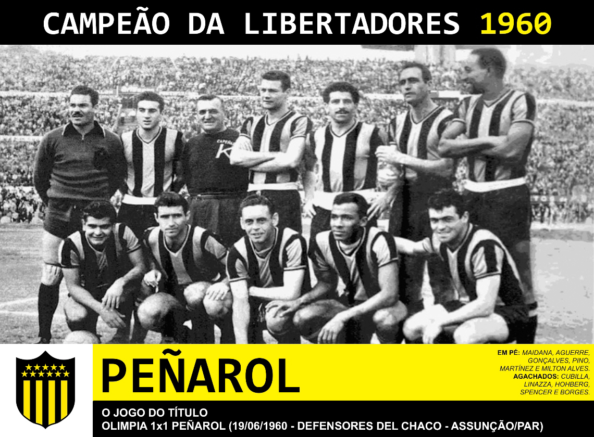
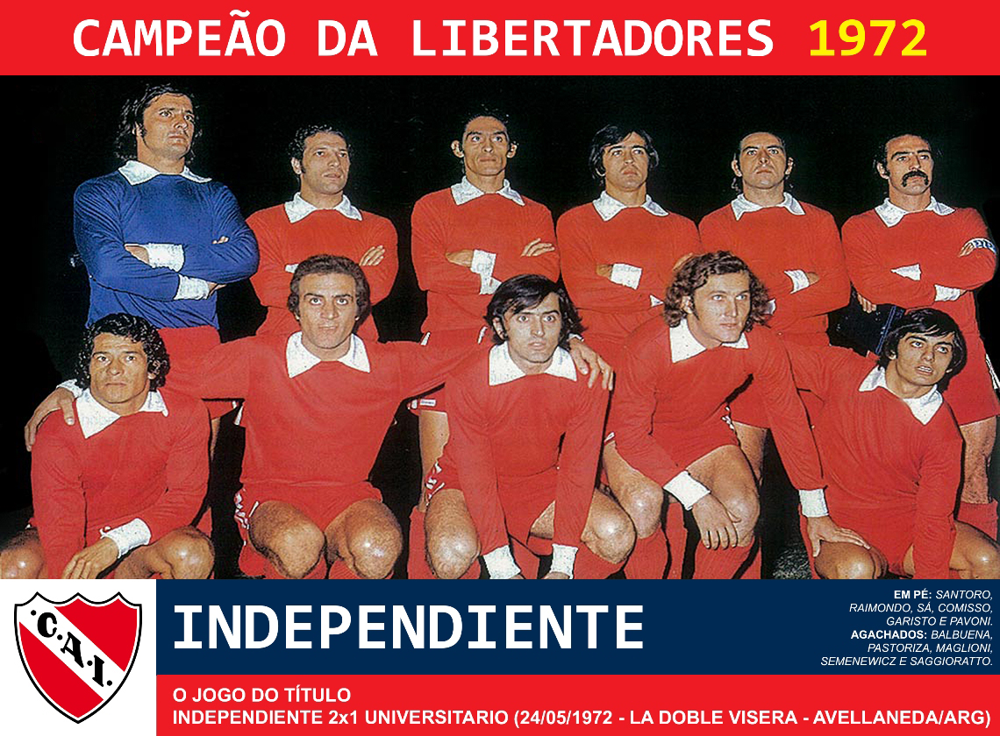
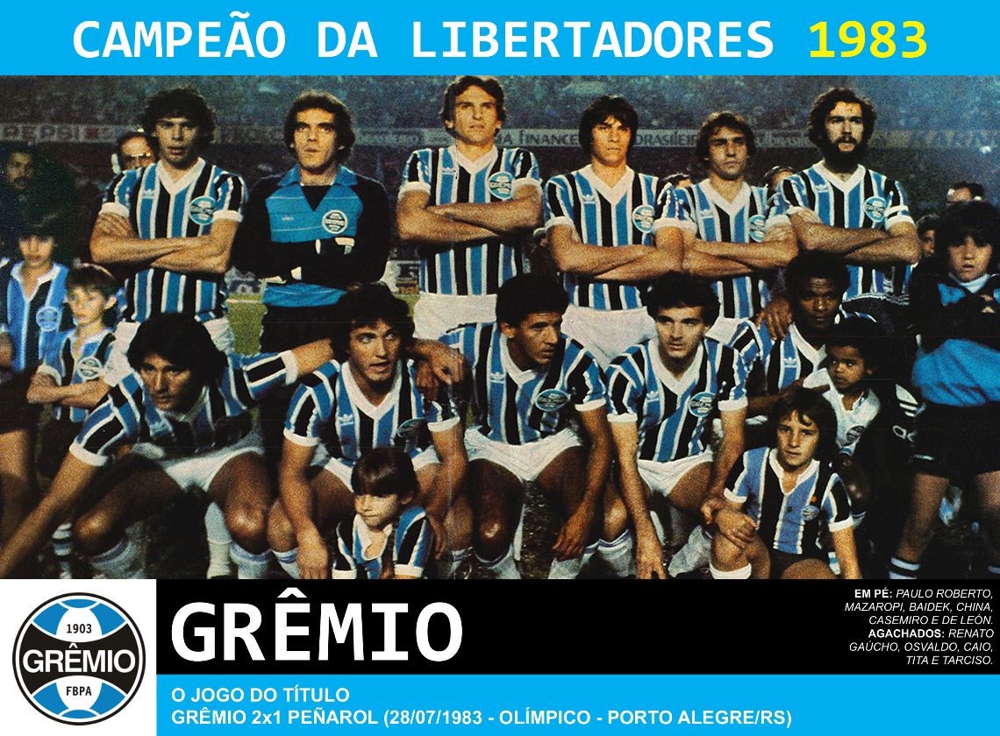
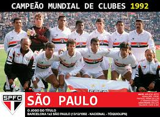
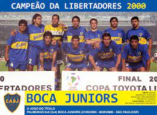
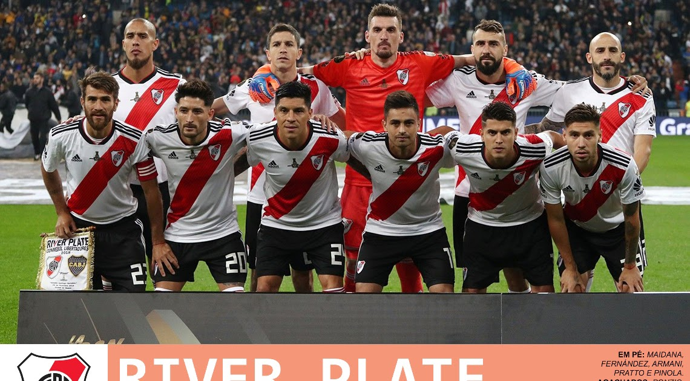
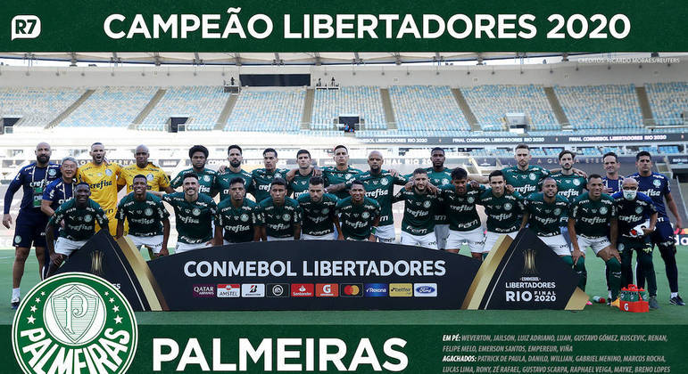

A Copa Libertadores foi criada em 1960 como uma competição de clubes de futebol da América do Sul, seguindo o modelo da Liga dos Campeões da UEFA na Europa. A ideia de criar um torneio continental sul-americano foi proposta pela Confederação Sul-Americana de Futebol (CONMEBOL) como uma maneira de aumentar a competição entre os clubes e fortalecer os laços esportivos na região.
A primeira edição da Copa Libertadores teve início em 1960, e o formato inicial contou com a participação de sete equipes: quatro da Argentina, duas do Uruguai e uma do Brasil. O formato da competição evoluiu ao longo dos anos para incluir mais clubes de diferentes países sul-americanos.
O nome "Libertadores" foi escolhido para homenagear os líderes da independência sul-americana do domínio espanhol no século XIX, refletindo o desejo de liberdade e unidade na região.
O torneio tornou-se rapidamente uma das competições mais prestigiadas e emocionantes do futebol sul-americano, proporcionando aos clubes a oportunidade de competir em um cenário internacional e conquistar o título de melhor time da América do Sul.
Desde a sua criação, a Copa Libertadores tem sido uma vitrine para alguns dos melhores jogadores e clubes da região, criando rivalidades intensas e proporcionando momentos memoráveis ao longo das décadas.
A primeira edição ocorreu em 1960, com a participação de sete equipes.
O Peñarol, do Uruguai, venceu o primeiro título ao derrotar o Olimpia, do Paraguai, na final.
Clubes argentinos e uruguaios dominaram o torneio nessa década.
O Independiente, da Argentina, conquistou quatro títulos consecutivos entre 1972 e 1975.
Grandes rivalidades surgiram, destacando-se os confrontos entre times argentinos e uruguaios.
O Grêmio, do Brasil, venceu sua primeira Libertadores em 1983.
Clubes brasileiros e argentinos continuaram a se destacar.
O São Paulo FC foi o primeiro time brasileiro a vencer três vezes consecutivas, entre 1992 e 1994.
A presença de clubes brasileiros e argentinos permaneceu forte.
O Boca Juniors, da Argentina, ganhou títulos em 2000, 2001 e 2003.
O River Plate, da Argentina, e o Atlético Nacional, da Colômbia, foram campeões notáveis.
A final de 2018 entre River Plate e Boca Juniors atraiu atenção mundial.
O Palmeiras, do Brasil, venceu em 2020, conquistando seu segundo título.
A competição continuou a ser uma vitrine para talentos sul-americanos, com equipes buscando glória continental.
A Copa Libertadores é conhecida por suas partidas intensas, rivalidades históricas e por ser uma competição que captura a paixão e a emoção do futebol sul-americano. Cada edição contribui para a rica tapeçaria do esporte na região.
